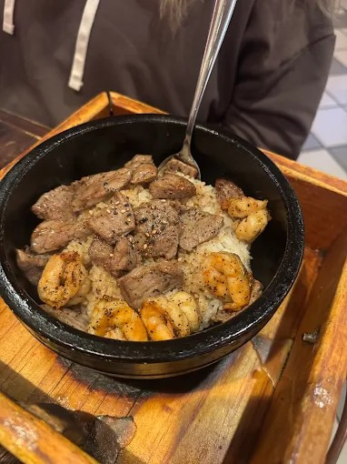
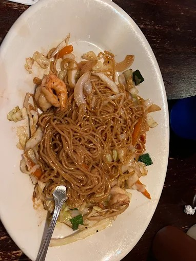
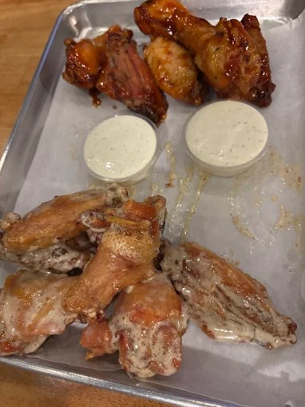
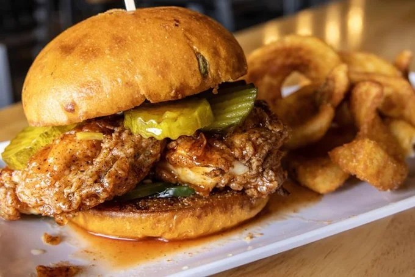
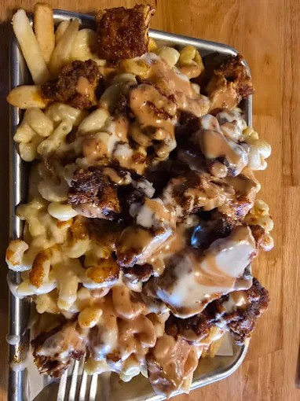
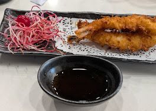
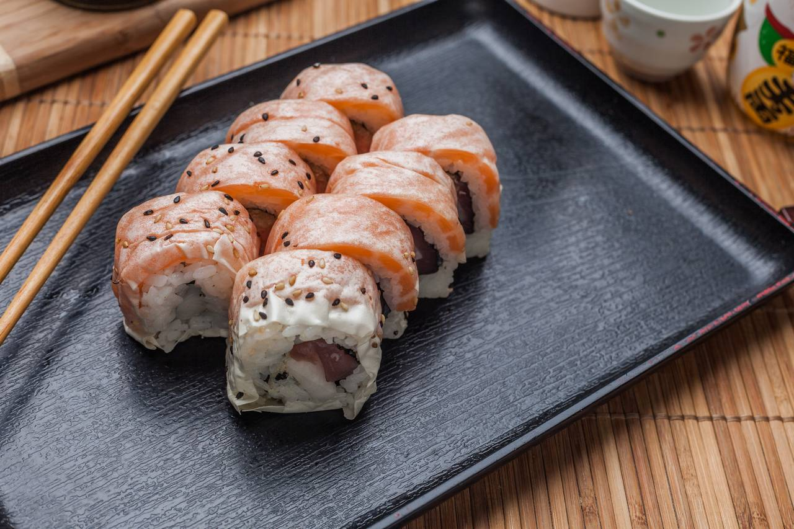

This page recommends three food spots near campus that are good for students. The purpose of this is to hep someone quickly pick a place to eat without having to overthink it.
This page would of helped me as a commute student who did not know where to eat when I had long days and did not know where everything was.
Each restaurant will include a main photo, a short description, and theree dish cards with images. The layoout is responsive so the cards stack nicely on smaller screens.
Don Japanese Restaurant is a cozy eatery located just a short distance from campus. Known for its delicious donburi bowls, savory teriyaki dishes, and flavorful ramen, it's a favorite among students looking for a quick and satisfying meal. The restaurant's warm ambiance and friendly staff make it an ideal spot for both lunch and dinner. Whether you're craving a hearty bowl of ramen or a tasty teriyaki plate, Don Japanese Restaurant has something to satisfy your appetite.
Spicy Ramen
A spicy bowl of ramen with pork and vegetables It is good for the cold weather and makes you feel warm and cozy.
Hibachi Chicken and Shrimp

Hibachi chicken and shrimp served with fried rice. A perfect balance of savory and sweet flavors.
Chicken and Shrimp Lo Mein

Chicken and shrimp lo mein with a flavorful sauce. A great option for noodle lovers.
The Upper Deck is a popular spot on campus known for its casual atmosphere and delicious food. It's a great place to grab a quick bite or meet up with friends. The menu features a variety of burgers, sandwiches, and salads that are perfect for students on the go. Whether you're looking for something hearty or light, The Upper Deck has something to satisfy your cravings.
Burger

The traditional chicken wings are a very good pick they are juicy and full of flavor
Chicken Sandwich

A grilled chicken sandwich with pickles and special sauce. A healthy and satisfying option.
Garden Salad

A very good loaded fries with macarooni cheese, chicken topped with an amazing sauce.
Kazoku Japanese Restaurant is a cozy spot on campus that serves authentic Japanese cuisine. Known for its fresh sushi, sashimi, and tempura dishes, Kazoku offers a delightful dining experience for students and faculty alike. The restaurant's warm atmosphere and attentive service make it a favorite among campus diners.
Shrimp Tempura

Fresh shrimp tempura served with a tangy dipping sauce. A crispy and satisfying appetizer.
California Roll
A classic California roll made with crab, avocado, and cucumber. A great option for sushi beginners.
Spicy Tuna Roll

A spicy tuna roll made with fresh tuna, avocado, and cucumber. A bold and flavorful choice for sushi lovers.
Closing / Contact Information
Thank you for visiting my page showcasing some of the best restaurants near campus. I hope you found it helpful in discovering new dining options and satisfying your cravings. Whether you're in the mood for Japanese cuisine, burgers, or something else, there's something for everyone on this list.
If you have any questions or suggestions about the restaurants featured on this page, please feel free to reach out to us. We value your feedback and would love to hear from you!